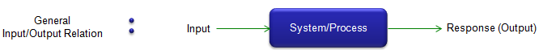
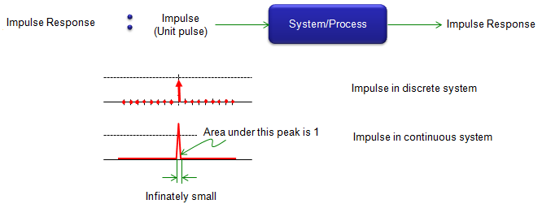
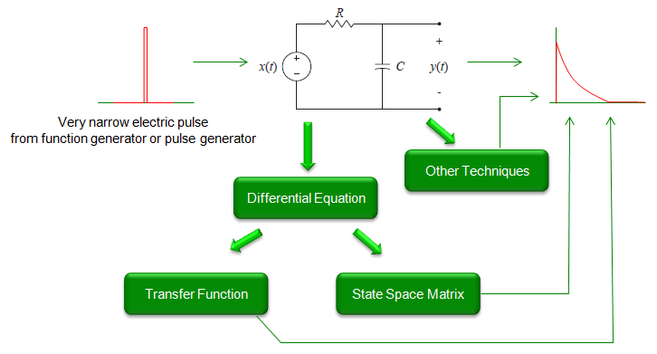
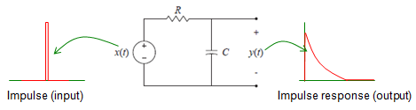
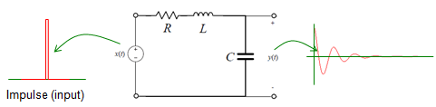

|
Communication - Impulse Response Home : www.sharetechnote.com |
|
Definition of the Impulse Response is very straight forward. It is the response(output) from a system (or process) when you put an 'impulse (unit pulse, delta function)' as an input.
As you know, a system/process and input/output relations can be illustrated as follows. You put some Input to the system and you get an output (Response) from the sytem.

Impulse Reponse is a special case of these Input -> System -> Output relationship. It is a special case where Unit pulse is the input to a system as shown below. In case of discrete system, the impulse (unit pulse) is simple data sequence in which only the value at t = 0 is 1 and all other elements are 0. In case of continous system, the unit pulse is a continuous delta function where the width of the pulse is infinately small and the area under the pulse is 1. It means that the height of the pulse should become infinately high to make the area to be 1. So it is impossible to make the ideal unit pulse in continous system. You can only approximate it.

Why the Impulse Response is important ?
Why we have to care about the impulse response ? It is because it fully characterize a system. If you know the impulse response of a system, you can figure out the response (output) of the system for any kind of input without even testing it. (Note : This holds true only when the system is LTI(Linear Time Invariant) system). Once you have the impulse response and any arbitrary input, you can predict the output of the system simply by taking the convolution of the input and the impulse response. You see many examples in Convolution page. In that page, you see data sequences representing a 'channel' and it is the impulse response of the channel. If you see the filer design examples in Signal Processing page, you would see various sequences (they call it 'taps for filter' or 'coefficient') representing the characteristics of filters. Those filter taps are also a impulse response for the filter.
How to get the impulse response for a system ?
Now you would know that impulse response is very important information for a system. Then how can we get the important information (impulse response) for a system ? I can think of roughly three four methods as listed below.

I will put further explanation about this process later. In the meantime, I would recommend you to go through Laplace Transform page and Differential equation pages for mathematical background for this.
Examples of Impulse Response
I will start with a couple of examples first, but I will keep adding more examples to give you intuitive ideas for impulse responses for various systems.


|
p